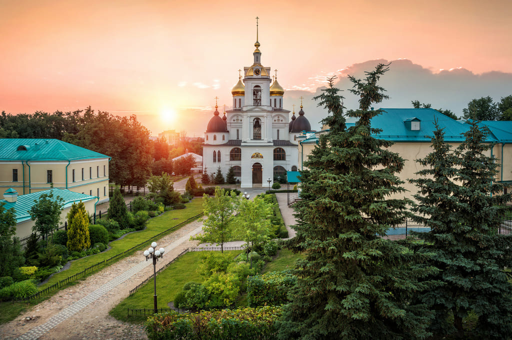

Дмитров
Дмитров - небольшой город, возведенный в примерно в одно время с Москвой Юрием Долгоруким. Место может похвастаться небольшим кремлем с живописным валом, необычными фонтанами и уникальными скульптурами. Интересно, что символом этого города является лягушка, поэтому на Кропоткинской можно найти целый музей, посвященный этому земноводному. А летом здесь проводится ежегодный Фестиваль Дмитровской лягушки. Среди насыщенной программы есть конкурс на лучший костюм Царевны Лягушки, мастер-классы и веселые состязания.
Рядом с Кремлем находится одна из главных городских улиц, мини Арбат— Кропоткинская. Она является пешеходной и позволяет окунуться в тихую провинциальную атмосферу. Ее главным украшением служит ансамбль скульптур дмитровчан «Горожане». Это коллекция разнообразных фигур людей из различных веков и сословий. Говорят, если потереть некоторые из скульптур - тебе улыбнется удача.
Кропоткинская улица не просто так получила свое название. Дело в том, что в Дмитрове есть целый дом-музей П. А. Кропоткина. Построенный в XIX веке особняк революционера-анархиста относят к музейному комплексу Дмитровского кремля. Музей обставлен по всем традициям того времени, а его экспозиция рассказывает о жизни самого Кропоткина и о зарождении анархизма в России в целом.
Гуляя возле Кремля, не забудьте подняться на живописные валы, с которых открывается чудесный вид на город. Там же есть место, где молодожёны вешают замочки, скрепляя свои судьбы и сердца.
Одной из визитных карточек города является памятник, посвященный Великой Отечественной войне. На Пермиловской высоте были остановлены немецко-фашистские войска, рвущиеся к Москве. Сам памятник представляет из себя бросающегося в атаку солдата с поднятым над головой автоматом.
Расстояние от Москвы до Дмитрова – 81 км. Добраться сюда можно на электричке с Савеловского вокзала или автобусом № 401, 310 от метро «Алтуфьево».
Рядом с Кремлем находится одна из главных городских улиц, мини Арбат— Кропоткинская. Она является пешеходной и позволяет окунуться в тихую провинциальную атмосферу. Ее главным украшением служит ансамбль скульптур дмитровчан «Горожане». Это коллекция разнообразных фигур людей из различных веков и сословий. Говорят, если потереть некоторые из скульптур - тебе улыбнется удача.
Кропоткинская улица не просто так получила свое название. Дело в том, что в Дмитрове есть целый дом-музей П. А. Кропоткина. Построенный в XIX веке особняк революционера-анархиста относят к музейному комплексу Дмитровского кремля. Музей обставлен по всем традициям того времени, а его экспозиция рассказывает о жизни самого Кропоткина и о зарождении анархизма в России в целом.
Гуляя возле Кремля, не забудьте подняться на живописные валы, с которых открывается чудесный вид на город. Там же есть место, где молодожёны вешают замочки, скрепляя свои судьбы и сердца.
Одной из визитных карточек города является памятник, посвященный Великой Отечественной войне. На Пермиловской высоте были остановлены немецко-фашистские войска, рвущиеся к Москве. Сам памятник представляет из себя бросающегося в атаку солдата с поднятым над головой автоматом.
Расстояние от Москвы до Дмитрова – 81 км. Добраться сюда можно на электричке с Савеловского вокзала или автобусом № 401, 310 от метро «Алтуфьево».
Где перекусить?
• Кафе Каяк – вкусный ресторанчик в тихом месте. В меню: мясо и рыба на мангале, мидии, супы, завтраки, десерты. Советую попробовать трюфельный омлет и пирожное «Анна Павлова». Оссобенность этого места заключается в том, что хозяева кафе также организуют сплавы на каяках. Средний чек — 850 руб.
• Пловмания – ресторан со смешанной кухней. Здесь можно найти как шашлык с пловом, так и вок, том ям. Здесь готовят вкусно и большими порциями. Посетители хвалят и уютный интерьер. Средний чек — 800 руб.
• Кофейня-кондитерская «Здесь был Чехов» находится в доме, где раньше была аптека. Сюда приходил за лекарствами Чехов, когда работал в Звенигородской больнице. Поэтому стены кофейни расписаны рисунками и фразами из рассказов и писем Чехова. Некоторые приходят сюда не только поесть, но и поработать, ведь почти все места оборудованы розетками и доступом к вайфаю. Советую попробовать фирменные морковные вафли и круассан с сёмгой. Средний чек — 1000 руб.
• Пловмания – ресторан со смешанной кухней. Здесь можно найти как шашлык с пловом, так и вок, том ям. Здесь готовят вкусно и большими порциями. Посетители хвалят и уютный интерьер. Средний чек — 800 руб.
• Кофейня-кондитерская «Здесь был Чехов» находится в доме, где раньше была аптека. Сюда приходил за лекарствами Чехов, когда работал в Звенигородской больнице. Поэтому стены кофейни расписаны рисунками и фразами из рассказов и писем Чехова. Некоторые приходят сюда не только поесть, но и поработать, ведь почти все места оборудованы розетками и доступом к вайфаю. Советую попробовать фирменные морковные вафли и круассан с сёмгой. Средний чек — 1000 руб.
